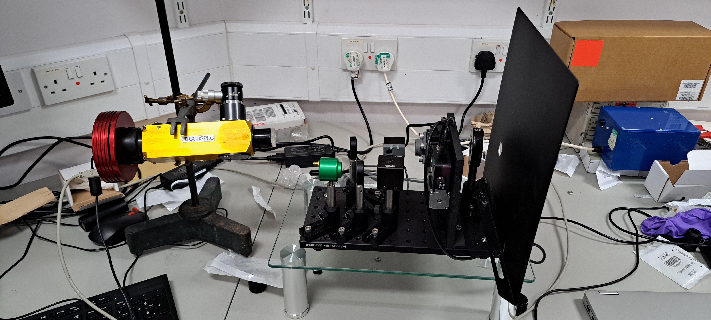

Understanding stellar variability with polarimetric Sun-as-a-star observations
The search for Earth-twins
The installation of the third-generation High-Accuracy Radial velocity Planet Searcher (HARPS3), on the 2.54-m Isaac Newton Telescope in La Palma marks the beginning of the next era of ground-based exoplanet detection using radial velocities (RVs). HARPS3 will be able to measure radial velocities with precisions of 10 cm/s. The significance of this number is that if an alien observer lightyears away from us were to view our Solar system with HARPS3, they would have the required precision to detect the Earth! HARPS3 is the new powerhouse instrument of the aptly named Terra Hunting Experiment, or THE. The THE will have half of all observing time with HARPS3 for a period of 10 years, allowing for an extended RV survey in the coming years.

Detecting Earth-sized planets
Current detection limits are goverened not by instrumental shortcomings, but by stellar variation. Solar activity emits RV signals on the order of m/s - a magnitude greater than Earth-sized planets. As such, in order to detect Earth-sized planetary signals around a sunlike star, mitigation techniques must be employed. One way of thinking about this is by analogy. Imaging a single violinist in an orchestra. The violinist plays a crucial role in creating the overall sound of the entire orchestra, however, detecting the violinists sound alone would be tricky. In order to do that, you would have to understand the trumpets. If you were able to get the sheet musi for the trumpets, and replicate the sount they make, you may be able to remove it from the orchestras total sound. What you are left with, is the single quiet signal. ABORAS aims to do exactly this - detecting the violin Earth among the trumpets of the star.
ABORAS
ABORAS will make use of HARPS3 during the daylight hours, taking polarimetric data of the only star that astronomers are absolutely certain has no planets.
